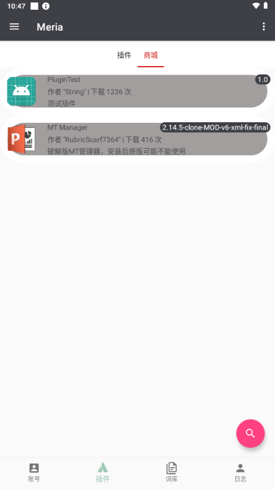
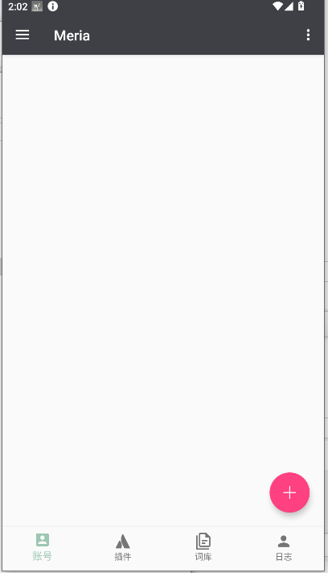

Meria 用了大半年，这个 QQ 机器人框架到底经不经造
从第一次给 QQ 群装机器人到现在，Meria 陪我走过了好几个版本迭代。这篇不谈评测参数，只说时间筛下来的那些事。
去年冬天装的 Meria，到现在快八个月了。当初动机很简单——加的几个老群越来越冷，想整个机器人偶尔活跃一下气氛。对比了两三个手机端的 QQ 机器人框架之后选了Meria官网，原因也朴素：界面看着清爽，词库商城现成的东西多，不用自己从零搭。

越用越顺手的，是它的"装了就能跑"
刚装上的时候最担心的是配置门槛。安装包从官方下载拿的，安卓那一套权限放开、自启动白名单，小米的 MIUI 入口又藏得深，第一次调权限来来回回折腾了一刻钟。但权限给齐之后，Meria 的核心体验其实挺稳的——打开框架、扫码登录 QQ、加个群、装个签到词库，五件套走完就能用。
插件机制是后来慢慢摸透的。一开始觉得 MTManager 这种内置插件是花架子，直到有一次换群的时候发现 MTManager 能批量同步词库配置，才反应过来插件不是给框架加"手"那么简单，是帮你省重复劳动的工具。现在每次新装一个 Meria 实例，MTManager 是第一个装的插件。
词库商城的生态也值得提。一开始只敢装一两个签到、天气这种刚需词库，后来胆子大了点娱乐类的。素材包从几十 KB 到几百 KB 不等，下载几秒钟的事。下载完绑定账号就能生效，流程没什么花哨的地方，但就是踏实——八个月下来没遇到过商城抽风或词库下载失败的情况。
越用越烦的，是那些当初没注意到的小毛病
安卓后台被杀这个事，装的时候以为给了自启动白名单就万事大吉了。实际上小米的"自启动管理"只是第一道关，还有"后台弹出界面权限""电池优化白名单""锁屏清理保护"——这些入口散在 MIUI 的不同角落，漏了任何一个，手机放一晚上 Meria 就悄悄退了。前三个月掉线是常态，后来把这几道关一道道补齐，才算稳住。
词库触发词冲突是第二个坑。一开始不知道"宁少勿多"这个原则，后来去Meria文档翻了一下才确认是真的——一次下了五六个词库往一个群里堆，结果两个娱乐词库都用"抽签"当触发词，机器人来回响应，群里刷屏刷得停不下来。后来把词库清单整理了一遍，每个群只留一两个互补的词库，冲突问题才算解决。
还有一个偶发的 bug：下完词库之后切回本地词库列表，有时候新下的词库就是不显示。重启 Meria 才冒出来。概率不高，但每次遇到都要花一两分钟排查，挺烦的。问过同好，说是框架版本迭代过程中存储权限的兼容性问题，新版本已经修了大半。
每天离不开的，和碰都没再碰的
娱乐词库是现在群里最常用的模块。骰子、抽签、成语接龙——不是天天用，但关键时刻真能救场。上个月有个群聊到一半没人说话，有人随口发了个"骰子"，机器人摇了一颗出来，立刻有人接"六点我请奶茶"，气氛一下就回来了。还有投票功能，去年年底团建地点就是用 Meria 的投票功能快速定的，选项加截止时间，群成员点一下就行，比在群里一条条刷回复高效太多。

反过来，MTManager 插件的高级配置功能，我装了大半年到现在也只用到了批量同步那一个场景。什么插件商城、扩展模块导入，看起来功能挺全，但日常真用不上。说个反直觉的：当初选 Meria 时最看重的"插件扩展性"，八个月下来反而是词库生态给的惊喜更多。
时间修正了我的几个判断
装之前我以为插件是框架的核心竞争力，毕竟"框架级扩展"听起来比"功能级模块"档次高得多。实际用下来发现，词库才是日常真正跟群友互动的东西——插件给 Meria 加"手"，词库给机器人加"脑子"，而群友感知得到的只有"脑子"。这不是说插件没用，而是它的价值更偏向运维层面，普通用户很难直接感受到。
另一个修正：当初担心 Meria 作为手机端框架，稳定性会不会比 PC 端的方案差。八个月跑下来，除了安卓后台被杀那个老生常谈的问题，框架本身的掉线率其实不高——真正让机器人下线的，大多是 QQ 登录态过期，或者手机系统层面的清理，不是 Meria 自己崩的。
去留结论
不会卸载。Merria 现在在我两个活跃群里跑着，一个主打娱乐互动，一个主打日常签到加信息查询，够用。什么情况下会换？要么出现了一个新的手机端框架，在稳定性和词库生态上都明显超过 Meria；要么 Meria 连续几个大版本更新都是在加花里胡哨的插件而不解决基础体验问题。后者的概率目前看不大——最近两个版本的更新日志都在修存储权限和后台管理的 bug，方向是对的。
说到底，Meria 是那种"过日子"的工具：不会让你惊艳，但时间长了你会发现它默默把该做的事都做了。八个月不算长，但足够筛掉那些当初看起来很美的功能，留下真正每天都在用的那几个。
顺手说一句，这套关于 Meria 的整理资料在三个开源仓库都能拿到：GitHub、Gitee、GitCode，国内访问慢的话后面两个可能更顺。